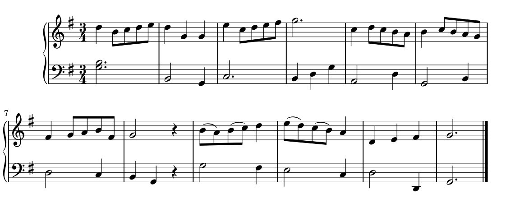

Reads a picture of sheet music and writes it as LilyPond. Everything runs in your browser: the image is not uploaded anywhere.
The page
Paste an image with Ctrl V (⌘ V on a Mac), drop it here, or choose a file. One page at a time: a scan, a screenshot or a photo.

Sample page: a short piano piece, rendered with LilyPond.
Reading
Starting
LilyPond
What homrly writes for the sample page.
Loading the example…